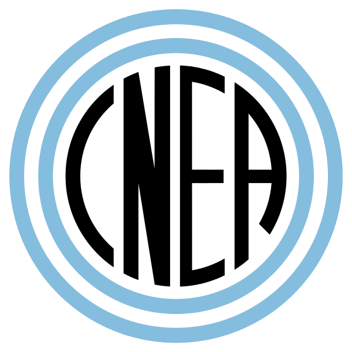

InvestigadorROL 01
Solicita turnos de irradiación, sigue el estado desde “Mis turnos”, responde a propuestas de fecha y descarga el documento final.

TANDAR-CNEA Manual de usuarioGuía para utilizar el sistema web de gestión de turnos de irradiación del TANDAR — Centro Atómico Constituyentes, Comisión Nacional de Energía Atómica (CNEA).
TANDAR-CNEA es el sistema web utilizado en TANDAR para gestionar las solicitudes de turno de irradiación en las distintas líneas experimentales del acelerador.
Reemplaza el circuito manual de pedidos y aprobaciones por un flujo digital con roles, notificaciones y generación automática de la documentación final.
El sistema acompaña una solicitud desde que un investigador la crea hasta que queda aprobada con un número de solicitud asignado.
Creación y seguimiento digital de turnos de irradiación.
Flujo de revisión según el rol de cada persona.
Consulta de las fechas reservadas por línea experimental.
Registro de las actuaciones y estados de las solicitudes.
El rol determina qué páginas puede ver cada persona y qué acciones puede realizar.
Solicita turnos de irradiación, sigue el estado desde “Mis turnos”, responde a propuestas de fecha y descarga el documento final.
Aprueba, rechaza o propone modificar solicitudes correspondientes a sus líneas antes de que pasen a Radioprotección.
Completa la “Página 2” con las condiciones de seguridad radiológica o rechaza la solicitud cuando corresponda.
Realiza la aprobación final, asigna el número de solicitud, gestiona usuarios y líneas y comunica cambios de último momento.
En el caso general, una solicitud atraviesa cuatro etapas de revisión antes de quedar aprobada.
Carga los datos del experimento y solicita el turno.
Aprueba, rechaza o propone otra fecha.
Completa la Página 2 o rechaza la solicitud.
Realiza la aprobación final y asigna el número.
La fecha queda reservada y se genera el documento final.
Los pasos esenciales para utilizar el sistema según cada rol.
Iniciá sesión, entrá a “Solicitar turno”, elegí línea y fechas, completá los datos del experimento y seguí el avance desde “Mis turnos”.
Desde el Panel de Responsable de Línea, revisá las solicitudes pendientes y elegí Aprobar, Rechazar o Proponer modificación.
Elegí la condición de operación, el personal mínimo y las indicaciones adicionales. Al guardar, la solicitud pasa al Jefe de Operaciones.
Abrí la solicitud con Página 2 completa y seleccioná Aprobar. Se asigna el número, se reserva la fecha y se notifica al investigador.
Desde la pantalla de inicio de sesión, hacé clic en “Crear cuenta” y completá nombre, apellido, email y contraseña (mínimo 8 caracteres, con confirmación). Toda cuenta nueva se crea con el rol “Investigador”.
Ingresá tu email y contraseña en /auth/login.php. Si las credenciales son correctas, el sistema te lleva automáticamente al panel correspondiente a tu rol.
Desde “¿Olvidaste la contraseña?” ingresá tu email para recibir un enlace que permite definir una contraseña nueva. El enlace tiene un tiempo de validez limitado.
Es el panel principal del investigador. Muestra una tarjeta por cada solicitud con línea, fechas, estado y observaciones, ordenadas de la más reciente a la más antigua.
El menú incluye Solicitudes, Historial, Calendario y Último momento. Si no tiene ninguna línea asignada, el sistema muestra un aviso para contactar al Oficial de Radioprotección.
| Acción | Qué pide | Qué sucede |
|---|---|---|
| Aprobar | Nada adicional. | Pasa a “Pendiente de Radioprotección” y se notifica al Oficial. |
| Rechazar | Motivo obligatorio. | Queda “Rechazada por responsable” y se notifica al investigador. |
| Proponer modificación | Fecha desde / hasta y motivo. | Pasa a “Modificada por responsable” y el investigador debe responder. |
Cuando el investigador confirma una fecha propuesta por el responsable, la solicitud aparece en la sección de confirmadas y el responsable debe presionar “Enviar al Oficial de Radioprotección” para que continúe el circuito.
Este rol recibe las solicitudes aprobadas por el responsable de línea y realiza la evaluación de seguridad radiológica mediante la “Página 2”.
Si la solicitud no puede autorizarse por motivos de radioprotección, puede rechazarse indicando un motivo obligatorio.
Es el rol con más funciones: aprobación final, administración de usuarios y roles, asignación de líneas y avisos de cambios de último momento.
| Acción | Qué pide | Resultado |
|---|---|---|
| Aprobar | Página 2 completa. | Asigna número, reserva fecha, notifica al investigador y habilita el documento final. |
| Rechazar | Motivo obligatorio. | La solicitud queda rechazada. |
| Devolver a RP | Motivo obligatorio. | Vuelve al Oficial de Radioprotección. |
| Proponer modificación | Fechas propuestas y motivo. | El investigador debe confirmar o rechazar la nueva fecha. |
Desde el detalle de cada solicitud también se puede acceder a “Editar Página 2” para corregir la evaluación de radioprotección sin devolver el trámite al Oficial.
Muestra en formato mensual todas las fechas reservadas por línea experimental, cada una con un color distinto.
Reúne las solicitudes del sistema —o de las líneas propias, según el rol— agrupadas por mes y con buscador por solicitante, línea y experimento.
El ícono muestra un punto rojo cuando existen avisos sin leer. Allí se listan los cambios de horario sobre turnos ya aprobados y se puede consultar la solicitud completa o descargar el Excel adjunto.
El botón de sol/luna alterna entre modo claro y oscuro. La preferencia se guarda en el navegador y se mantiene entre sesiones.
Una vez que una solicitud queda “Aprobada”, desde “Ver detalle completo” o desde el historial se puede generar el documento final, identificado con el número de solicitud y el año.
Datos del solicitante, línea, experimento, turno, tipo de haz y blanco, permanencia, irradiación nocturna y observaciones.
Condición de operación, personal mínimo, indicaciones, observaciones, Oficial responsable y fecha.
Impresión o guardado como PDF. El Jefe de Operaciones también puede descargar una versión editable en Excel.
Recién creada; espera la revisión del responsable.
El responsable propuso otra fecha; espera respuesta.
El responsable de línea rechazó la solicitud.
El investigador confirmó la propuesta; falta el envío al Oficial.
Fue aprobada por el responsable y espera la Página 2.
La Página 2 está completa; espera aprobación final.
El Jefe de Operaciones propuso otra fecha.
La fecha propuesta fue tomada por otra solicitud.
Turno confirmado, con número asignado y fecha reservada.
Rechazada por Radioprotección o por el Jefe de Operaciones.
Solo se puede editar mientras está “Pendiente Responsable”, antes de que el responsable de línea la haya aprobado, rechazado o propuesto una modificación.
No se pierde información. La acción solo oculta de tu propia vista las solicitudes ya finalizadas; los demás roles siguen viéndolas y quedan registradas.
Mientras se esperaba una respuesta, esa fecha fue tomada por otra solicitud en la misma línea experimental. Hay que solicitar o proponer una fecha que siga disponible.
Porque el Oficial de Radioprotección todavía no completó la Página 2. Hay que esperar a que la complete o, si corresponde, usar “Devolver a RP”.
El rol se asigna manualmente desde “Administración de Usuarios”, función exclusiva del Jefe de Operaciones. Hay que solicitarlo a quien cumpla ese rol en el grupo.